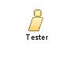

|
| El tester es responsable de realizar pruebas exhaustivas en el software para identificar y reportar defectos. |
| Synonyms: Ingeniero de pruebas, Control de calidad, Aseguramiento de la calidad, Validador, Validador de software. |
|
Relationships
 |
| Additionally Performs |
|
Main Description
| El tester, también conocido como analista de pruebas o ingeniero de pruebas, es un rol clave en el desarrollo de software.
Su principal responsabilidad es diseñar, ejecutar y analizar pruebas para garantizar la calidad y funcionalidad del
software. El tester se enfoca en identificar defectos, verificar el cumplimiento de los requisitos y evaluar la usabilidad
y rendimiento del sistema. Además, colabora estrechamente con el equipo de desarrollo para entender los requisitos y las
especificaciones del software. |
Staffing
| Skills | Conocimiento de metodologias de pruebas, Comprension de los requisitos, Habilidades de scriptin, |
| Assignment Approaches | El tester puede ser asignado a proyectos de software desde el inicio, participando en la definición de requisitos y el
diseño del sistema, o puede ser involucrado en etapas posteriores del desarrollo para realizar pruebas de funcionalidad,
rendimiento y seguridad. |
| Synonyms | Ingeniero de pruebas, Control de calidad, Aseguramiento de la calidad, Validador, Validador de software. |
Key Considerations
| Conocimiento tecnico de prueba, Habilidades de analisis, Resolucion de problemas, Capacidad para diseñar, Capacidad
comunicacion. |
|